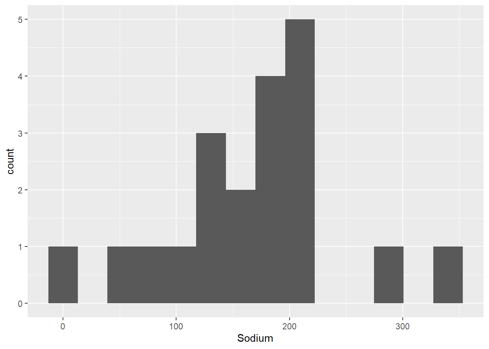
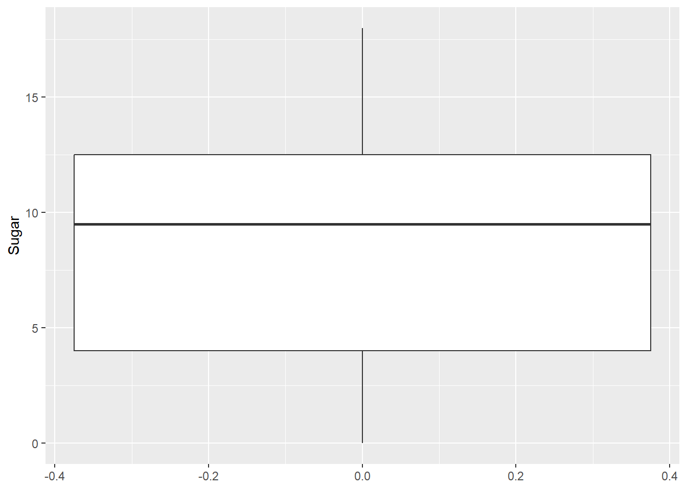
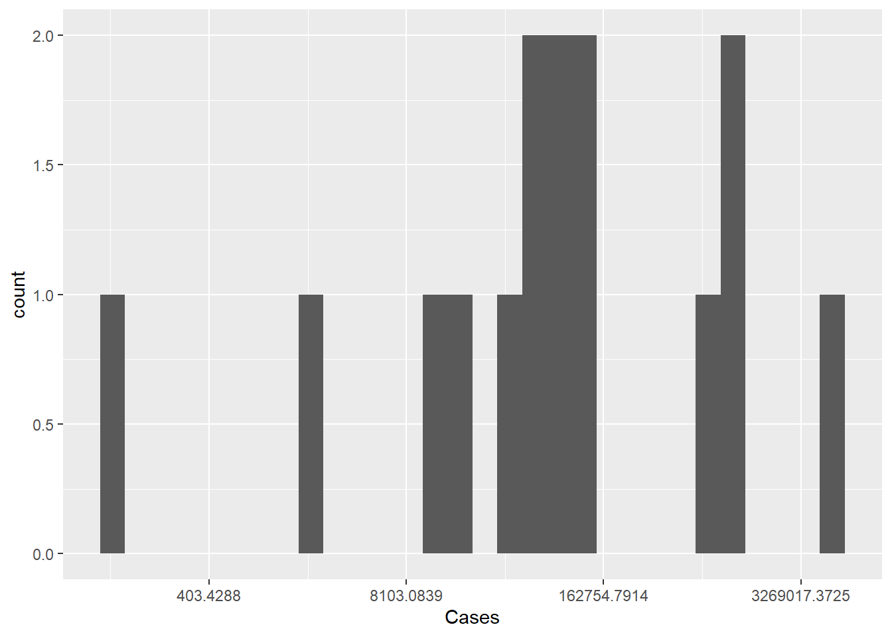
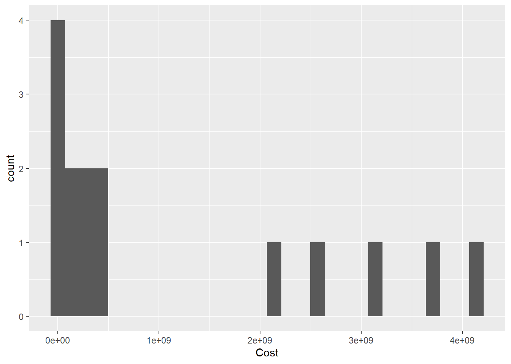
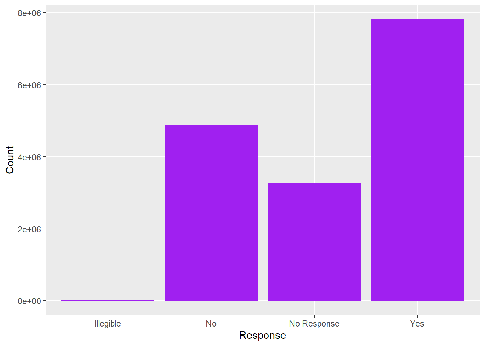
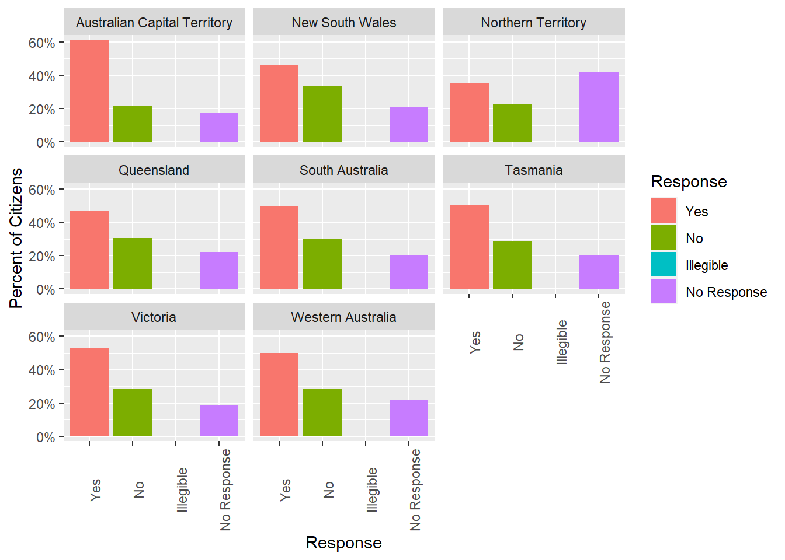
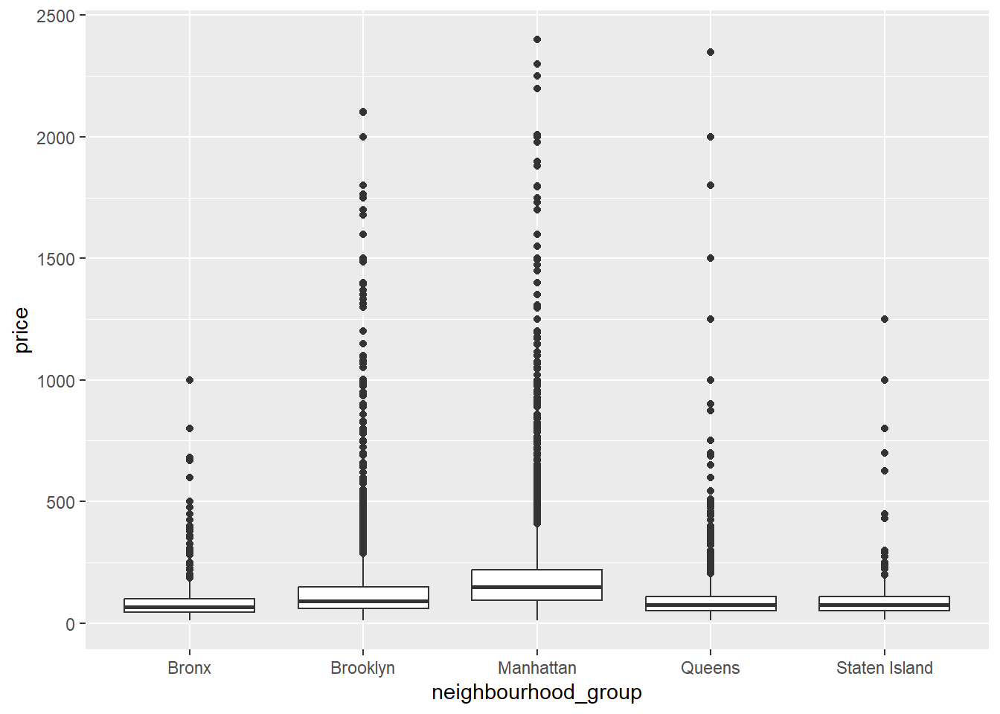
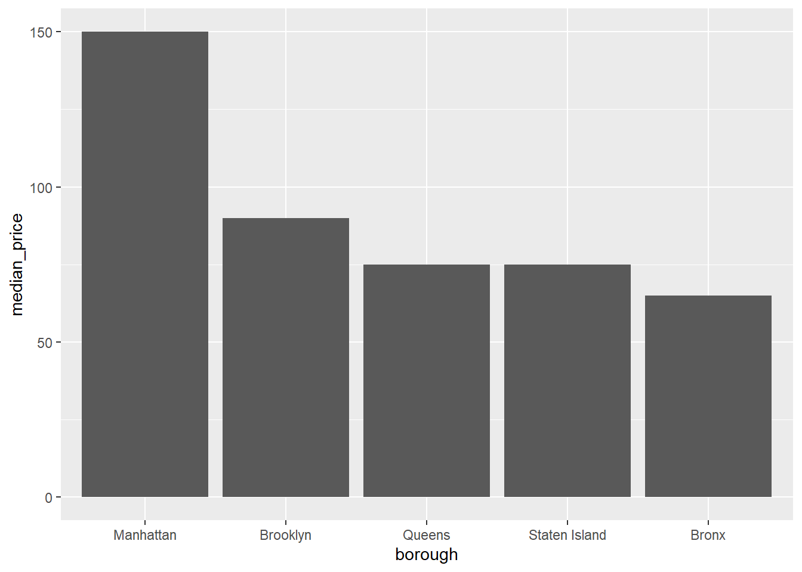
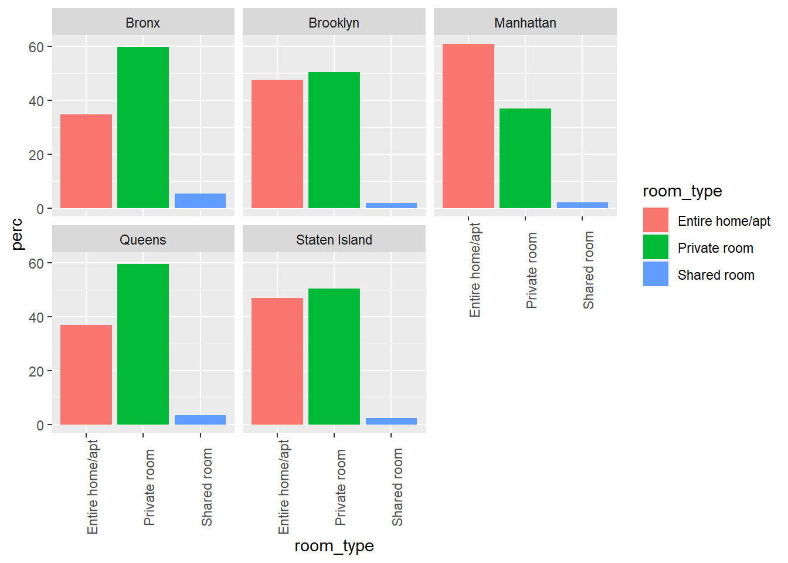

library(tidyverse)
library(ggplot2)
library(readxl)
library(ggrepel)
library(here)
knitr::opts_chunk$set(echo = TRUE, warning=FALSE, message=FALSE)Challenge 5 Solutions
challenge_5
railroads
cereal
air_bnb
pathogen_cost
australian_marriage
Introduction to Visualization
Challenge Overview
Today’s challenge is to:
- read, clean, and tidy data and then…
- create at least two univariate visualizations
- try to make them “publication” ready
- Explain why you choose the specific graph type
- Create at least one bivariate visualization
- try to make them “publication” ready
- Explain why you choose the specific graph type
There is even an R Graph Gallery book to use that summarizes information from the website!
:::{.panel-tabset}
cereal ⭐
The cereal dataset includes sodium and sugar content for 20 popular cereals, along with an indicator of cereal category (A, B, or C) but we are not sure what that variable corresponds to.
cereal<-here("posts","_data","cereal.csv") %>%
read_csv()Univariate Visualizations
I am interested in the distribution of sodium and sugar content in cereals, lets start by checking out a simple histogram - binned into approximately 25 mg ranges. I do this by setting bins equal to max minus the min of the variable.
# compute number of bins to use
n_bins_sod <- round((max(cereal$Sodium) - min(cereal$Sodium))/25)
n_bins_sod[1] 14ggplot(cereal, aes(x=Sodium)) +
geom_histogram(bins=n_bins_sod)
It looks like there are some outliers while most cereals are more clumped together between 100 and 200 mg. Unfortunately, we can’t automatically label outliers, but there is a commonly used trick to add in labels that I can never get to work for a single boxplot. So, I use it for grouped data in the example below, but am cheating by using the car package to label the outliers for the single boxplot - maybe one of you can find a better way!
car::Boxplot(cereal$Sodium,
data=cereal,
id=list(labels=cereal$Cereal),
cex=0.2)
[1] "Frosted Mini Wheats" "Raisin Bran" is_outlier <- function(x) {
return(x < quantile(x, 0.25) - 1.5 * IQR(x) | x > quantile(x, 0.75) + 1.5 * IQR(x))
}
cereal %>%
mutate(Sugar = Sugar * 15) %>%
pivot_longer(cols=c(Sodium, Sugar),
names_to = "content",
values_to = "value")%>%
group_by(content)%>%
mutate(outlier = if_else(is_outlier(value), Cereal, NA_character_)) %>%
ggplot(., aes(x = content, y = value, color=factor(content))) +
geom_boxplot(outlier.shape = NA) +
theme(legend.position = "none") +
geom_text(aes(label = outlier), na.rm = TRUE, show.legend = FALSE) +
scale_y_continuous("Milligrams (Sodium)",
sec.axis = sec_axis(~ . /15, name = "Milligrams (Sugar)")
)
How about sugar? We can set the number of bins to cover 2 grams of sugar.
n_bins_sug <- round((max(cereal$Sugar) - min(cereal$Sugar))/2)ggplot(cereal, aes(x=Sugar)) +
geom_histogram(bins=n_bins_sug)
It looks like cereals are more closely grouped with respect to sugar content - and a boxplot indicates no true outliers.
ggplot(cereal, aes(y = Sugar)) +
geom_boxplot()
Bivariate Visualization(s)
Are cereals high in sodium low in sugar, or vice versa? To answer this question, lets check out a scatterplot.
ggplot(cereal, aes(x=Sugar, y=Sodium)) +
geom_point()
It doesn’t look like there is a systematic relationship. However, this might be different if we added in the types A and C. Also, Raisin Bran seems to be high in both!
ggplot(cereal,aes(x=Sugar,y=Sodium,col=Type))+
geom_point()
Even factoring in type of cereal, there doesn’t seem to be a systematic relationship. However, let’s see if we can add in labels for outliers. We will label each data point an outlier if it is an outlier on EITHER variable.
cereal %>%
mutate(outlier_sug=is_outlier(Sugar),
outlier_sod=is_outlier(Sodium),
outlier_lab=if_else(outlier_sug | outlier_sod, Cereal, NA_character_)) %>%
ggplot(aes(Sugar,Sodium))+
geom_point()+
geom_text(aes(label=outlier_lab),col="purple")
Oh no! The text label gets cut off for Raisin Bran, and it overlaps with the point for Frosted Mini Wheats.
To fix this issue, we’ll use the geom_text_repel() function from the ggrepel package, which automatically moves text labels so they don’t overlap with other points and fit on a plot.
cereal %>%
mutate(outlier_sug=is_outlier(Sugar),
outlier_sod=is_outlier(Sodium),
outlier_lab=if_else(outlier_sug | outlier_sod, Cereal, NA_character_)) %>%
ggplot(aes(Sugar,Sodium))+
geom_point()+
geom_text_repel(aes(label=outlier_lab),col="purple")
pathogen cost ⭐
This dataset includes the total number of cases and total estimated cost for the top 15 pathogens in 2018.
pathogen<-here("posts","_data","Total_cost_for_top_15_pathogens_2018.xlsx") %>%
readxl::read_excel(
skip=5,
n_max=16,
col_names = c("pathogens", "Cases", "Cost"))
pathogenUnivariate Visualizations
Lets check out the distribution of cost and number of cases. There are only 15 observations - even fewer than the number of cereals, and the data are highly skewed. Will the same sorts of visualizations work?
ggplot(pathogen, aes(x=Cases)) +
geom_histogram()
ggplot(pathogen, aes(x=Cases)) +
geom_histogram()+
scale_x_continuous(trans = "log")
ggplot(pathogen, aes(x=Cases)) +
geom_boxplot()
ggplot(pathogen, aes(x=Cases)) +
geom_boxplot()+
scale_x_continuous(trans = "log10")



The histogram isn’t ideal, we can see the single outlier - but it is hard to get a grasp on the number of cases of pathogens with lower case counts. Perhaps if we rescaled the number of cases to a log or some other scaling function. As we see below, the logging of the x axis is much more revealing.
What happens when we graph costs?
ggplot(pathogen, aes(x=Cost)) +
geom_histogram()
ggplot(pathogen, aes(x=Cost)) +
geom_histogram()+
scale_x_continuous(trans = "log10")

Bivariate Visualization(s)
Given what we saw above, lets try a logged and unlogged scatterplot for Cases vs Costs.
ggplot(pathogen, aes(x=Cases, y=Cost, label=pathogens)) +
geom_point() +
scale_x_continuous(labels = scales::comma)+
geom_text()
ggplot(pathogen, aes(x=Cases, y=Cost, label=pathogens)) +
geom_point()+
scale_x_continuous(trans = "log10", labels = scales::comma)+
scale_y_continuous(trans = "log10", labels = scales::comma)+
ggrepel::geom_label_repel()

It looks a little better, but overall this isn’t super helpful. Perhaps this dataset would be better used for someone in this field, as a reference point.
Australian Marriage ⭐⭐
In 2017, Australia conducted a postal survey to gauge citizens’ opinions towards same sex marriage: “Should the law be changed to allow same-sex couples to marry?” The table provided by the Australian Bureau of Statistics includes estimates of the proportion of citizens choosing to 1) vote yes, 2) vote no, 3) vote in an unclear way, or 4) fail to vote. These results are aggregated by Federal Electoral District, which are nested within one of 8 overarching Electoral Divisions. See Challenge 3 for more details.
vote_orig <- here("posts","_data","australian_marriage_law_postal_survey_2017_-_response_final.xls") %>%
readxl::read_excel(
sheet="Table 2",
skip=7,
col_names = c("District", "Yes", "del", "No", rep("del", 6), "Illegible", "del", "No Response", rep("del", 3)))%>%
select(!starts_with("del"))%>%
drop_na(District)%>%
filter(!str_detect(District, "(Total)"))%>%
filter(!str_starts(District, "\\("))
vote<- vote_orig%>%
mutate(Division = case_when(
str_ends(District, "Divisions") ~ District,
TRUE ~ NA_character_ ))%>%
fill(Division, .direction = "down")
vote<- filter(vote,!str_detect(District, "Division|Australia"))
vote_long <- vote%>%
pivot_longer(
cols = Yes:`No Response`,
names_to = "Response",
values_to = "Count"
)Univariate Visualization(s)
I think I will start out by graphing the overall proportion of Australian citizens who voted yes, no, etc. That requires me to recreate the proportions information we discarded when we read in the data!
vote_long%>%
group_by(Response)%>%
summarise(Count = sum(Count))%>%
ggplot(., aes(x=Response, y=Count))+
geom_bar(stat="identity",fill="purple")
Hm, I see a few issues. I would like to reorder the Yes and No folks (who voted) and clearly distinguish them from No Response. Plus maybe label the bars with the % vote (or total numbers?) and the axis with the other value.
vote_long%>%
mutate(Response = as_factor(Response),
Response = fct_relevel(Response, "Yes", "No", "Illegible"))%>%
group_by(Response)%>%
summarise(Count = sum(Count))%>%
ungroup()%>%
mutate(perc = Count/sum(Count))%>%
ggplot(., aes(y=perc, x=Response))+
#geom_bar(stat="Identity", alpha=.75) +
geom_col()+
scale_y_continuous(name= "Percent of Citizens",
label = scales::percent) +
geom_text(aes(label = Count), size=3, vjust=-.5)
Bivariate Visualization(s)
Let’s see jf there’s a relationship between Division and Response - that is, are certain divisions more likely to respond one way compared to other divisons?
vote_long%>%
mutate(Response = as_factor(Response),
Response = fct_relevel(Response, "Yes", "No", "Illegible"),
Division=str_remove(Division," Divisions")) %>%
group_by(Division,Response)%>%
summarise(Count = sum(Count))%>%
group_by(Division)%>%
mutate(perc = Count/sum(Count))%>%
ggplot(., aes(y=perc, x=Response,fill=Response))+
#geom_bar(stat="Identity", alpha=.75) +
geom_col()+
facet_wrap(vars(Division))+
scale_y_continuous(name= "Percent of Citizens",
label = scales::percent)+
theme(axis.text.x=element_text(angle=90))#+
#geom_text(aes(label = Count), size=3, vjust=-.5)Technically, we’ve gotten ahead of ourselves (we haven’t yet gotten to facets and themes), so don’t worry if this is still a bit confusing.
Overall, it looks like the territories are generally in agreement. Respondents in each territory are more likely to respond Yes than No. However, the difference between Yes and No is greatest in the Australian Capital Territory. Moreover, a large chunk of participants from the Northern Territory declined to respond. This could significantly change our conclusions about the distribution of responses across territories, depending on how these respondents really feel.
We should also taper our conclusions based on the number of responses per territory. Presumably this is proportional to the population size in each territory, but it’s good to check:
terr_size <- vote_long %>%
mutate(Division=str_remove(Division," Divisions")) %>%
group_by(Division) %>%
summarise(n=sum(Count)) %>%
ungroup() %>%
arrange(desc(n))
terr_sizeggplot(terr_size,aes(reorder(Division,-n),n))+
geom_col()+
theme(axis.text=element_text(angle=90))
While learning the true yes/no distribution within the Northern Territory1 might change our conclusion about the distribution of responses within the Northern Territory, it won’t change much about the distribution of responses across Australians overall.
AB_NYC_2019.csv ⭐⭐⭐
This is a new data set from air bnb, lets check it out.
airb<-here("posts","_data","AB_NYC_2019.csv") %>%
read_csv()
print(summarytools::dfSummary(airb,
varnumbers = FALSE,
plain.ascii = FALSE,
style = "grid",
graph.magnif = 0.70,
valid.col = FALSE),
method = 'render',
table.classes = 'table-condensed')Data Frame Summary
airb
Dimensions: 48895 x 16Duplicates: 0
| Variable | Stats / Values | Freqs (% of Valid) | Graph | Missing | |||||||||||||||||||||||||||||||||||||||||||||||||||||||
|---|---|---|---|---|---|---|---|---|---|---|---|---|---|---|---|---|---|---|---|---|---|---|---|---|---|---|---|---|---|---|---|---|---|---|---|---|---|---|---|---|---|---|---|---|---|---|---|---|---|---|---|---|---|---|---|---|---|---|---|
| id [numeric] |
|
48895 distinct values |  |
0 (0.0%) | |||||||||||||||||||||||||||||||||||||||||||||||||||||||
| name [character] |
|
|
 |
16 (0.0%) | |||||||||||||||||||||||||||||||||||||||||||||||||||||||
| host_id [numeric] |
|
37457 distinct values |  |
0 (0.0%) | |||||||||||||||||||||||||||||||||||||||||||||||||||||||
| host_name [character] |
|
|
 |
21 (0.0%) | |||||||||||||||||||||||||||||||||||||||||||||||||||||||
| neighbourhood_group [character] |
|
|
 |
0 (0.0%) | |||||||||||||||||||||||||||||||||||||||||||||||||||||||
| neighbourhood [character] |
|
|
 |
0 (0.0%) | |||||||||||||||||||||||||||||||||||||||||||||||||||||||
| latitude [numeric] |
|
19048 distinct values |  |
0 (0.0%) | |||||||||||||||||||||||||||||||||||||||||||||||||||||||
| longitude [numeric] |
|
14718 distinct values |  |
0 (0.0%) | |||||||||||||||||||||||||||||||||||||||||||||||||||||||
| room_type [character] |
|
|
 |
0 (0.0%) | |||||||||||||||||||||||||||||||||||||||||||||||||||||||
| price [numeric] |
|
674 distinct values |  |
0 (0.0%) | |||||||||||||||||||||||||||||||||||||||||||||||||||||||
| minimum_nights [numeric] |
|
109 distinct values |  |
0 (0.0%) | |||||||||||||||||||||||||||||||||||||||||||||||||||||||
| number_of_reviews [numeric] |
|
394 distinct values |  |
0 (0.0%) | |||||||||||||||||||||||||||||||||||||||||||||||||||||||
| last_review [Date] |
|
1764 distinct values |  |
10052 (20.6%) | |||||||||||||||||||||||||||||||||||||||||||||||||||||||
| reviews_per_month [numeric] |
|
937 distinct values |  |
10052 (20.6%) | |||||||||||||||||||||||||||||||||||||||||||||||||||||||
| calculated_host_listings_count [numeric] |
|
47 distinct values |  |
0 (0.0%) | |||||||||||||||||||||||||||||||||||||||||||||||||||||||
| availability_365 [numeric] |
|
366 distinct values |  |
0 (0.0%) |
Generated by summarytools 1.0.1 (R version 4.2.2)
2023-03-29
Univariate Visualizations
First, let’s take a look at the distribution of prices.
ggplot(airb,aes(price))+
geom_histogram()
Woah, there’s clearly a few outliers here.
range(airb$price)[1] 0 10000airb_filtered <- airb %>%
filter(price>0 & price<2500)
airb_filtered %>%
ggplot(aes(price))+
geom_histogram()
That’s better. The prices look right-skewed.
Bivariate Visualization(s)
Let’s consider the different types of rooms and how they relate to price.
airb_filtered %>%
ggplot(aes(room_type,price))+
geom_boxplot()+
theme(axis.text.x=element_text(angle=90))
airb_filtered %>%
ggplot(aes(price))+
geom_histogram()+
facet_wrap(vars(neighbourhood_group),scales="free")
There’s clearly a lot of variability in the data, but it looks like entire homes cost more than private rooms, which in turn cost more than shared rooms.
What about the relationship between minimum number of nights and price?
airb_filtered %>%
ggplot(aes(minimum_nights,price))+
geom_point()
There’s probably too much variability/not enough data to draw a clear conclusion.
These AirBnB data are from New York City - so let’s take a look at how the borough relates to price.
airb_filtered %>%
ggplot(aes(neighbourhood_group,price))+
geom_boxplot()
Again, a lot of variability and skew in the data, though it makes sense that Manhattan and Brooklyn would cost the most to stay in.
Let’s compute some summary statistics and plot them. We’ll compute the median (due to the skew in the data) and make bar graphs. Of course, the boxplot computes the median too, but it will be a bit easier to see when we take out the individual outliers.
airb_filtered %>%
rename(borough=neighbourhood_group) %>%
group_by(borough) %>%
summarise(median_price=median(price)) %>%
ggplot(aes(reorder(borough,-median_price), median_price))+
geom_col()+
labs(x="borough")
That’s better. Manhattan is a lot more expensive than the other boroughs - about double that of the Bronx!
airb_filtered %>%
rename(borough=neighbourhood_group) %>%
count(room_type,borough) %>%
group_by(borough) %>%
mutate(perc=(n/sum(n))*100) %>%
arrange(borough) %>%
ggplot(aes(room_type,perc,fill=room_type))+
geom_col()+
facet_wrap(vars(borough))+
theme(axis.text.x=element_text(angle=90))
Railroads ⭐⭐⭐
The railroad data contain 2931 county-level aggregated counts of the number of railroad employees in 2012. Counties are embedded within States, and all 50 states plus Canada, overseas addresses in Asia and Europe, and Washington, DC are represented. See challenges 1 and 2 for more information.
railroad<-here("posts","_data","StateCounty2012.xls") %>%
read_excel(skip = 4,
col_names= c("state", "delete", "county",
"delete", "employees"))%>%
select(!contains("delete"))%>%
filter(!str_detect(state, "Total"))
railroad<-head(railroad, -2)%>%
mutate(county = ifelse(state=="CANADA", "CANADA", county))Lets create some numerical variables that we can visualize!
railroad_summaries <- railroad%>%
group_by(state)%>%
summarise(state_employees = sum(employees),
state_counties = n_distinct(county))Univariate Visualizations
Let’s take a look at the distribution of the number of state employees across all counties in the US.
ggplot(railroad_summaries, aes(state_employees))+
geom_histogram()
Woah! There’s a lot outliers here.
Bivariate Visualization(s)
ggplot(railroad_summaries, aes(state_counties,state_employees))+
geom_point()
railroad_summaries %>%
arrange(desc(state_employees)) %>%
slice(1:10) %>%
ggplot(aes(reorder(state,-state_employees),state_employees))+
geom_col(fill="purple")+
labs(x="state")
Footnotes
We also assume sampling error within a given territory, so forcing participants to respond yes/no won’t entirely solve our issue.↩︎